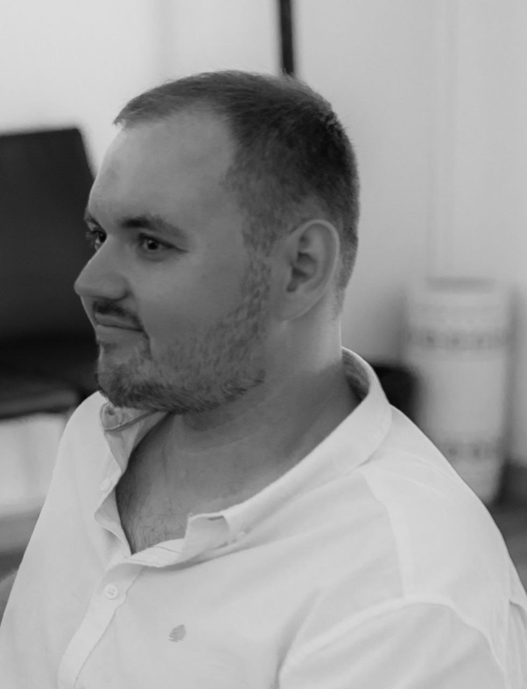

CV
About myself
Hello, my name is Daniil Romaniuta.
Goal's
I'm looking for a professional team, who keep up with the times, and not afraid difficult tasks. My goal is to grow in a team of people who are just as motivated as I am. I absorb information on the fly and have never violated deadlines due to my own fault, either during training or at work. I have communication skills and perceive expert opinion as the main thing. I understand perfectly well that my status is now low, but it is growing steadily, and I am confident that the work team will instill in me the necessary expert habits of behavior.Contacts
- monah445@gmail.com
- https://www.linkedin.com/in/daniil-romaniuta-145b57311/
Knowledge
My main skills
- Markdown, C++ , Java , Python
- HTML, CSS,
- Qt
- OOP , Color models(HEX/RGB/HSL)
- Git
- ADT, NGINX, MODBUS , GitHub, CMake, qmake
Examples
if(abstruct_name.contains("Equilateral polygon")){
multi_prim.clear();
for(int var = 0; var < multi_num; ++var) {
double radius=sqrt(pow(start_painting.y()- stop_painting.y(),2)+pow(start_painting.x()- stop_painting.x(),2));
double fi =atan2(start_painting.y()- stop_painting.y(),start_painting.x()-stop_painting.x());
QPointF point;
point.setX(start_painting.x()+radius*cos(M_PI+fi+2*M_PI*var/multi_num));
point.setY(start_painting.y()+radius*sin(M_PI+fi+2*M_PI*var/multi_num));
multi_prim.append(point);
}
polyline_prim.append(multi_prim);
polyline_prim.append(multi_prim.first());
}
Links to source code
Education
- Student RS School
- November 2024 - now
- Learning Marcdown, HTML and Git.
English
I practiced my communication skills with a nice elderly couple for 2 weeks.